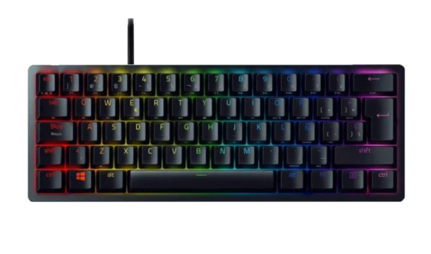
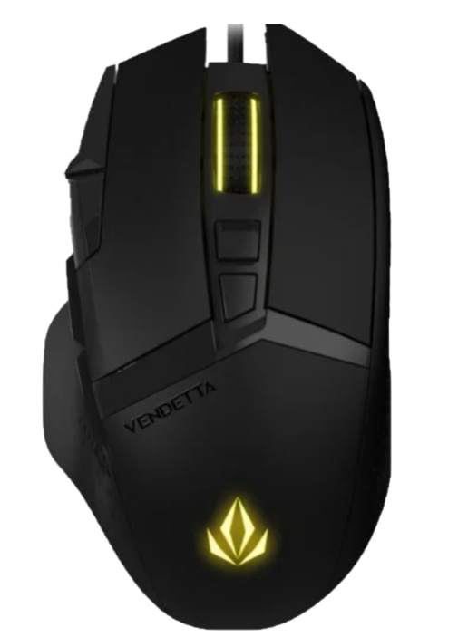
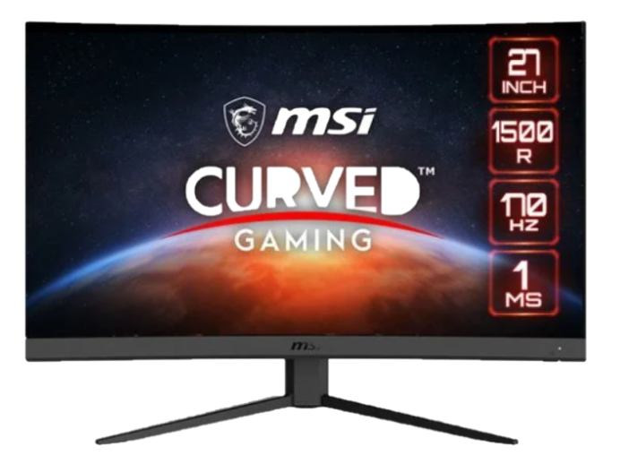

SMART DEVICES

Razer Huntsman Mini Teclado Gaming RGB Switch Red

Características
- Switch óptico linean Razer mejorado
- Diseño reducido al 60%
- Memoria integrada y preajustes de iluminación
- Cable de tipo C desmontable
Precio: 87,99€
Forgeon Vendetta Ratón Gaming RGB 16000DPI Negro

Características
- Sensor: PMW3389
- Frecuencia de escaneo: 16000 FPS
- Conector: USB 2.0
- Cable: 1,8 m con filtro de ferrita
- 8 botones
Precio: 33,99€
MSI Optix G27C4 E2 27" LED FullHD 170Hz FreeSync

Características
- Tamaño del panel 27"
- Frecuencia de actualización 170Hz
- Brillo (nits) 250
- Relación de aspecto 16:9
- Puertos de vídeo: 1x DP (1.2a), 2xHDMI
Precio: 158,99€
Forgeon General Auriculares Gaming Inalámbricos Negros
Características
- PC/PS4/PS5/Xbox/Xbox X/Switch
- Conexión 3.5mm jack combinado / 2.4Ghz con receptor / Bluethooth 4.0
- Orejeras: Piel sintética/Tela
- Entrada Carga: DC5V-2A MicroUSB
Precio: 78,49€